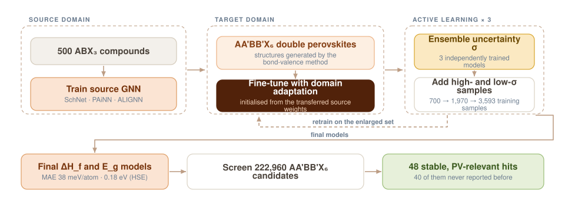

Transferring What a Model Already Knows About Perovskites
AA'BB'X6 double perovskites have unit cells at least twice the size of ABX3, which makes DFT roughly eight times more expensive under cubic scaling. Labelled data is therefore scarce exactly where the unexplored chemistry is. This work transfers parameters from a model trained on simple perovskites and sharpens it with uncertainty-driven active learning.

A chemical space too large to compute and too sparse to learn
Halide perovskites are used across light-emitting diodes, photocatalysis and — most promisingly — as light-absorbing materials for photovoltaics. Their appeal is the sheer breadth of the chemical space: swap compositions and you tune optical, electronic and thermodynamic properties. That breadth is also the problem. ABX3 compounds have been examined at scale; AA'BB'X6 compounds have not, precisely because the larger unit cell makes the calculations so much more expensive.
Machine learning can predict DFT properties at orders of magnitude lower cost — but only with enough labelled examples, which is the resource this chemistry does not have.
Getting structures without DFT relaxation
Before a GNN can learn anything it needs structures. Rather than relaxing each candidate with DFT, structures were generated with the bond-valence method, which is inexpensive and reliable enough to serve as model input. That choice is what makes screening 222,960 compositions feasible at all.
The domain-adaptation scheme
The approach involves two distinct pipelines with two different datasets. A source model is trained on 500 ABX3 compounds. Its optimal weights are then transferred to initialise training of a new model on the target AA'BB'X6 dataset, which is refined through standard validation and testing. The same procedure was implemented and benchmarked across three GNN architectures — SchNet, PAiNN and ALIGNN — so the gain could be attributed to the transfer rather than to one architecture's quirks.
A first, as far as we are aware
This is the first demonstration of domain adaptation for graph neural networks in materials science. The transfer yields a factor of 1.6 improvement in formation energy and 1.2–1.35 in HSE band gap compared with direct training.
Active learning on the model's own uncertainty
Three models were trained independently per property, and the standard deviation across them gives a per-sample uncertainty. Compounds above the 99th percentile were labelled high-uncertainty and those below the 1st percentile low-uncertainty; both were fed into the next iteration, so the training set grows where the model is confused and keeps a confident anchor. Because domain adaptation already outperformed direct training at iteration one, the DA approach was the one carried through the loop.
Training samples grew 700 → 1,970 → 3,593 across the three iterations. At the end, the best model reached a mean absolute error of 38 meV/atom against DFT/PBE formation energy on entirely unseen materials, and 0.18 eV for the HSE band gap.
What came out of the screen
Applying both models to all 222,960 candidates identified 48 compounds that are simultaneously stable and have an HSE band gap in the range relevant for photovoltaics. Only 8 of them have been reported to date — leaving 40 unexplored compounds as concrete candidates for experimental examination.